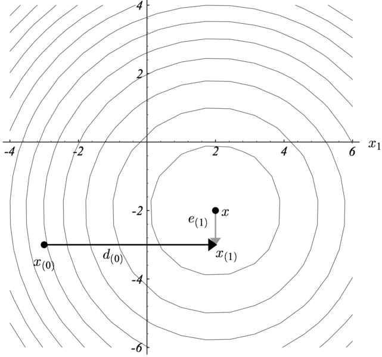

2.1. 下降法
基本思想：利用优化序列
\[
\mathbf{x}_{k+1}=\mathbf{x}_k+\mu_k\Delta\mathbf{x}_k,\quad k=1,2,\cdots\tag{1}
\]
寻找最优点\(\mathbf{x}_{opt}\)。\(\mu_k\)为第\(k\)次迭代的步长，\(\Delta\mathbf{x}_k\)为搜索方向其值为一个向量\(\Delta\mathbf{x}\in\mathbb{R}^n\)。最小化算法要求迭代过程中目标函数是下降的，
\[
f(\mathbf{x}_{k+1})<f(\mathbf{x}_k)
\]
所以该方法称为下降法。
2.1.1. 最速下降法
由Taylor公式可知，
\[
f(\mathbf{x}_{k+1})- f(\mathbf{x}_k)\approx\nabla f(\mathbf{x}_k)^\top\Delta\mathbf{x}_k\tag{2}
\]
显然，当\(0\le\theta\le \pi/2\), 令
\[
\Delta\mathbf{x}_k=-\nabla f(\mathbf{x}_k)\cos\theta\tag{3}
\]
必然有，\(f(\mathbf{x}_{k+1})<f(\mathbf{x}_k)\)成立。
\[
\mathbf{x}_{k+1}=\mathbf{x}_k+\mu_k\nabla f(\mathbf{x}_k)\tag{4}
\]
2.1.2. Newton法
Taylor公式展开至二阶有，
\[
f(\mathbf{x}_{k+1})\approx f(\mathbf{x}_k)+\nabla f(\mathbf{x}_k)^\top\Delta\mathbf{x}_k+\frac12(\Delta\mathbf{x}_k)^\top\nabla^2f(\mathbf{x}_k)(\Delta\mathbf{x}_k)\tag{5}
\]
显然最优化下降方向应该是让二阶展开式最得最小值的方向，即
\[
\min\limits_{\Delta\mathbf{x}_k}\left[f(\mathbf{x}_k)+\nabla f(\mathbf{x}_k)^\top\Delta\mathbf{x}_k+\frac12(\Delta\mathbf{x}_k)^\top\nabla^2f(\mathbf{x}_k)(\Delta\mathbf{x}_k)\right]\tag{6}
\]
对二阶展开式求导，可知，
\[
\frac{\partial f(\mathbf{x}_k+\Delta\mathbf{x}_k)}{\partial \Delta\mathbf{x}_k}=\nabla f(\mathbf{x}_k)+\nabla^2f(\mathbf{x}_k)\Delta\mathbf{x}_k=0\tag{7}
\]
则有最优搜索方向，
\[
\Delta\mathbf{x}_k=-\nabla^2f(\mathbf{x}_k)\nabla f(\mathbf{x}_k)\tag{8}
\]
该下降方向也称之为Newton步或Newton下降方向，记为\(\Delta\mathbf{x}_{nt}\)，相应的方法称为Newton法。
2.2. 梯度投影法
梯度下降法中变元是无约束的。若有约束\(\mathbf{x}\in\mathcal{C}\)，则梯度下降法中的更新公式应用投影代替，
\[
\mathbf{x}_{k+1}=\mathcal{P}_\mathcal{C}(\mathbf{x}_k-\mu_k\nabla f(\mathbf{x}_k))\tag{9}
\]
这一算法称为梯度投影法，也称为投影梯度法。投影算子\(\mathcal{P}_\mathcal{C}(\mathbf{y})\)定义为
\[
\mathcal{P}_\mathcal{C}(\mathbf{y})=\arg\min\limits_{\mathbf{x}\in\mathcal{C}}\frac12\lVert \mathbf{x}-\mathbf{y}\rVert_2^2\tag{10}
\]
例. 到超平面\(\mathcal{C}=\{\mathbf{x}|\mathbf{a}^\top\mathbf{x}=b\}\)的投影，
\[
\mathcal{P}_\mathcal{C}(\mathbf{x})=\mathbf{x}+\frac{b-\mathbf{a}^\top\mathbf{x}}{\lVert\mathbf{a}\rVert_2^2}\mathbf{a}
\]
求解过程：投影问题为如下优化问题，
\[
\mathcal{P}_\mathcal{C}(\mathbf{x})=\arg\min\limits_{\mathbf{z}\in\mathcal{C}}\frac12\lVert \mathbf{x}-\mathbf{z}\rVert_2^2 \quad s.t.\quad \mathbf{a}^\top\mathbf{x}-b=0
\]
则Lagrangian函数为，
\[
L(\mathbf{x},\lambda)=\frac12\lVert \mathbf{x}-\mathbf{z}\rVert_2^2 +\lambda( \mathbf{a}^\top\mathbf{z}-b)
\]
对Lagrangian函数求偏导并令其等于0，可得
\[\begin{split}
\begin{split}
\frac{\partial L}{\partial \mathbf{z}}&=\mathbf{z}-\mathbf{x}+\lambda \mathbf{a}=0\\
\frac{\partial L}{\partial \lambda}&=\mathbf{a}^\top\mathbf{z}-b=0\\
\end{split}
\end{split}\]
解上述方程组，将\(\mathbf{z}=\mathbf{x}-\lambda \mathbf{a}\)代入\(\mathbf{a}^\top\mathbf{z}-b=0\)，可得，
\[
\lambda = \frac{\mathbf{a}^\top\mathbf{x}-b}{\mathbf{a}^\top\mathbf{a}}
\]
再将\(\lambda\)代入\(\mathbf{z}-\mathbf{x}+\lambda \mathbf{a}=0\)，可得
\[
\mathbf{z}=\mathbf{x}+\frac{b-\mathbf{a}^\top\mathbf{x}}{\mathbf{a}^\top\mathbf{a}}\mathbf{a}
\]
2.3. 共轭梯度下降法
最速下降法的存在一个问题就是收敛速度过慢，因为已迭代的\(\mathbf{x}\)会来回振荡，从而导致收敛太慢。
Newton法虽然收收敛较快，但仍需要计算Hessian矩阵的逆，因此计算代价太高。
为了加速最速下降法的收敛速度和避免Newton法的Hessian逆矩阵计算，提出了共轭梯度下降法。

与前面两种下降方法类似，共轭梯度下降也是通过迭代来寻找最优点，即
\[
\mathbf{x}_{k+1}=\mathbf{x}_k+\alpha_k\mathbf{d}_k\tag{11}
\]
不同之处在于，每次迭代的下降方向向量\(\mathbf{d}_i\)与其它任何一次方向向量\(\mathbf{d}_j,j\neq i\)都是\(\mathbf{A}\)-共轭的；此外，\(\alpha_i\)是\(\min\limits_{\alpha}f(\mathbf{x}_{i-1}+\alpha\mathbf{d}_i)\)的最优值。
为了简要描述共轭的思想，以上图为例，坐标轴可以指定为搜索方向。第一步沿着水平方向到达\(\mathbf{x}^*\)的\(x_1\)分量部分。第二步没着垂直方向到达\(\mathbf{x}^*\)的\(x_2\)分量部分，然后结束搜索过程就可以确定\(\mathbf{x}^*\)的值。如果定义\(\mathbf{e}_i=\mathbf{x}^*-\mathbf{x}_i\)，则可以发现,
\[
\mathbf{d}_i^\top\mathbf{e}_{i+1}=0
\]
共轭梯度下降法源于二次规划问题的求解，即
\[
\min\limits_{\mathbf{x}}\quad \frac12\mathbf{x}^\top\mathbf{A}\mathbf{x}-\mathbf{b}^\top\mathbf{x}\quad(\mathbf{A}\succeq0)
\]
其梯度为\(\nabla f(\mathbf{x})=\mathbf{Ax}-b\triangleq r(\mathbf{x})\)，则求解最优值\(\mathbf{x}^*\)等价于求解方程组\(\mathbf{Ax}-\mathbf{b}=\mathbf{0}\)。如果\(\mathbf{A}\)是一个对称正定矩阵，那么必然可以构建一个\(\mathbb{R}^n\)空间的一个基，显然基的每个向量与其它基向量是共轭的。
下降方向能不能和这些基向量建立联系呢？答案是肯定的。易知，最优解\(\mathbf{x}^\top\)可以表示为
\[
\mathbf{x}^*=\sum_{i=0}^{n-1}\alpha_i\mathbf{d}_i\tag{12}
\]
如果\(\alpha_i,\mathbf{d}_i\)都已知，则\(\mathbf{x}^*\)可通过上式确定。
2.3.1. \(\mathbf{A}\)-共轭
定义1.假设\(\mathbf{A}\)是一个对称正定矩阵，那么称向量\(\mathbf{d}_i,\mathbf{d}_j\)是\(\mathbf{A}\)-共轭的，如果满足，
\[
\mathbf{d}_i^\top\mathbf{A}\mathbf{d}_j=0,\quad i\neq j.
\]
定理1. 两两向量相互\(\mathbf{A}\)-共轭的向量集\(\{\mathbf{d}_0,...,\mathbf{d}_{n-1}\}\)构成了一个\(\mathbb{R}^n\)空间的一个基，即\(\{\mathbf{d}_0,...,\mathbf{d}_{n-1}\}\)线性无关。
有了\(\mathbf{A}\)-共轭就可以来确定式(12)的各参数值了。
对式(12)左右同时乘上\(\mathbf{d}_k^\top\mathbf{A}\)，利用\(\mathbf{A}\)-共轭性可得
\[\begin{split}
\begin{split}
\mathbf{d}_k^\top\mathbf{A}\mathbf{x}^*&=\sum_{i=0}^{n-1}\alpha_i\mathbf{d}_k^\top\mathbf{Ad}_i\\
\Rightarrow\alpha_k&=\frac{\mathbf{d}_k^\top\mathbf{b}}{\mathbf{d}_k^\top\mathbf{Ad}_k}
\end{split}
\end{split}\]
可以看出，\(\alpha_k\)只与搜索方向\(\mathbf{d}_k\)有关，因此，只需要迭代\(n\)次就可以计算出\(\mathbf{x}^*\)，即
\[
\mathbf{x}^*=\sum_{i=0}^{n-1}\frac{\mathbf{d}_i^\top\mathbf{b}}{\mathbf{d}_i^\top\mathbf{Ad}_i}\mathbf{d}_i
\]
为了演示上述过程在\(n\)步计算出\(\mathbf{x}^*\)，引入如下定理。
定理2. 假设\(\{\mathbf{d}_0,...,\mathbf{d}_{n-1}\}\)是\(n\)个\(\mathbf{A}\)-共轭的向量，\(\mathbf{x}_0\)是初使点，令
\[\begin{split}
\begin{split}
\mathbf{x}_{k+1}&=\mathbf{x}_k+\alpha_k\mathbf{d}_k\\
\mathbf{g}_k&=\mathbf{b}-\mathbf{Ax}_k\\
\alpha_k&=\frac{\mathbf{g}_k^\top\mathbf{d}_k}{\mathbf{d}_k^\top\mathbf{A}\mathbf{d}_k}=\frac{(\mathbf{b}-\mathbf{Ax})_k^\top\mathbf{d}_k}{\mathbf{d}_k^\top\mathbf{A}\mathbf{d}_k}
\end{split}
\end{split}\]
则迭代\(n\)次后，\(\mathbf{x}_n=\mathbf{x}^*\)。
证明. 从起始点\(\mathbf{x}_0\)到\(\mathbf{x}^*\)的误差\(\mathbf{e}_0\)为，
\[
\mathbf{x}^*-\mathbf{x}_0=\alpha_0\mathbf{d}_0+\alpha_1\mathbf{d}_1+\cdots+\alpha_{n-1}\mathbf{d}_{n-1}
\]
从起始点\(\mathbf{x}_0\)到\(\mathbf{x}_k\)可以表示为，
\[
\mathbf{x}_k-\mathbf{x}_0=\alpha_0\mathbf{d}_0+\alpha_1\mathbf{d}_1+\cdots+\alpha_{k-1}\mathbf{d}_{k-1}
\]
\(\mathbf{x}_k\)的残差为
\[
\mathbf{g}_k=\mathbf{b}-\mathbf{Ax}_k=\mathbf{A}(\mathbf{x}^*-\mathbf{x}_k)
\]
因此可得\(\alpha_k\)如下，
\[\begin{split}
\begin{split}
\mathbf{d}_k^\top\mathbf{A}(\mathbf{x}^*-\mathbf{x}_0)&=\mathbf{d}_k^\top\mathbf{A}( \alpha_0\mathbf{d}_0+\alpha_1\mathbf{d}_1+\cdots+\alpha_{n-1}\mathbf{d}_{n-1})=\alpha_k\mathbf{d}_k^\top\mathbf{Ad}_k\\
\Rightarrow\alpha_k&=\frac{\mathbf{d}_k^\top\mathbf{A}(\mathbf{x}^*-\mathbf{x}_0)}{\mathbf{d}_k^\top\mathbf{Ad}_k}
\end{split}
\end{split}\]
但仍然需要提前知道\(\mathbf{x}^*\)才能计算\(\alpha_k\)。下面分析一下分子项。
\[\begin{split}
\begin{split}
\mathbf{d}_k^\top\mathbf{A}(\mathbf{x}^*-\mathbf{x}_0)&=\mathbf{d}_k^\top\mathbf{A}(\mathbf{x}^*-\mathbf{x}_k+\mathbf{x}_k-\mathbf{x}_0)\\
&=\mathbf{d}_k^\top\mathbf{A}(\mathbf{x}^*-\mathbf{x}_k)
\end{split}
\end{split}\]
上式中，用到了\(\mathbf{A}\)-共轭性，因此可以得知\(\mathbf{d}_k^\top\mathbf{A}(\mathbf{x}_k-\mathbf{x}_0)=0\)。
最终有，
\[
\alpha_k=\frac{\mathbf{d}_k^\top\mathbf{A}(\mathbf{x}^*-\mathbf{x}_k)}{\mathbf{d}_k^\top\mathbf{Ad}_k}=\frac{\mathbf{d}_k^\top\mathbf{g}_k}{\mathbf{d}_k^\top\mathbf{Ad}_k}\tag{13}
\]
2.3.2. 共轭梯度法
共轭梯度法是一种共轭方向方法。该方法选择的相继的方向向量被视为方法执行时相继获得的梯度的共轭版本。共轭方向并不是提前指定的，而是在每次序贯迭代时确定的。
假设有\(D=\{\mathbf{d}_1,...,\mathbf{d}_n\}\)是\(n\)个\(\mathbf{A}\)-共轭向量集，则函数\(f(\mathbf{x}_0+\alpha_1\mathbf{d}_1+\cdots+\alpha_n\mathbf{d}_n)\)的最小化可以从\(\mathbf{x}_0\)出发沿着\(\mathbf{d}_1\)的方向到达极小值点\(\mathbf{x}_1\)，然后从\(\mathbf{x}_1\)出发沿着\(\mathbf{d}_2\)的方向到达极小值点\(\mathbf{x}_2\)，如此继续就可以达到函数的最小值点。这种优化方法称之为共轭梯度法。
上一节根据\(\mathbf{A}\)-共轭已解决了\(\alpha_i\)的计算问题，剩下的工作就是要解决\(\mathbf{d}_i\)的计算问题。
线性共轭梯度法一般使用以下规则来确定共轭方向\(\mathbf{d}_{k+1}\)，
\[
\mathbf{d}_{k+1}=\mathbf{g}_k+\beta_k\mathbf{d}_{k}\tag{14}
\]
即，下一个搜索方向是上一个搜索方向与负梯度的线性组合。那么，\(\beta_k\)怎么确定呢？
显然，根据\(\mathbf{A}\)-共轭性可知，\(\mathbf{d}_k^\top\mathbf{A}\mathbf{d}_{k+1}=0\)，因此，对式(14)左右同时乘上\(\mathbf{d}_k^\top\mathbf{A}\)可得，
\[
\mathbf{d}_k^\top\mathbf{A}\mathbf{d}_{k+1}=\mathbf{d}_k^\top\mathbf{A}\mathbf{g}_{k}+\beta_k\mathbf{d}_k^\top\mathbf{A}\mathbf{d}_{k}=0
\]
整理可得，
\[
\beta_k=-\frac{\mathbf{d}_k^\top\mathbf{A}\mathbf{g}_{k}}{\mathbf{d}_k^\top\mathbf{A}\mathbf{d}_{k}}\tag{15}
\]
至此，线性共轭梯度算法的所有参数\((\alpha_i,\beta_i)\)已确定。
2.3.3. 案例
例1. 考虑如下二次规划，
\[
f(\mathbf{x})=\frac12\mathbf{x}^\top\mathbf{A}\mathbf{x}+\mathbf{b}^\top\mathbf{x}
\]
其中，
\[\begin{split}
\mathbf{A}=\left[\begin{array}{cc}\frac12&\frac12\\\frac12&1\end{array}\right],\quad\mathbf{b}=\left[\begin{array}{c}0\\2\end{array}\right]
\end{split}\]
求函数最小值，以及变量最优解\(\mathbf{x}^*\)。
import numpy as np
def f(x):
return x[0]**2/2+x[0]*x[1]+x[1]**2-2*x[1]
def linear_conj_desc(x,A,b,epsilon):
g=b-A.dot(x)
d = g # negative descent direction
while True:
if(np.linalg.norm(g)<=epsilon):
return x, f(x)
alpha= d.dot(g)/d.dot(A.dot(d))
x = x + alpha*d
g = b-A.dot(x)
beta = -d.dot(A.dot(g))/d.dot(A.dot(d))
d = g+beta*d
if __name__=='__main__':
A=np.array([[1/2,1/2],[1/2,1]], dtype=float)
b=np.array([0.,2.])
x_,f_=linear_conj_desc(np.array([2.3,-2.2]),A,b,10**-5)
print("x=",x_)
print("\nf_=",f_)
最后输出为，
x= [-4. 4.]
f_= -1.7763568394002505e-15